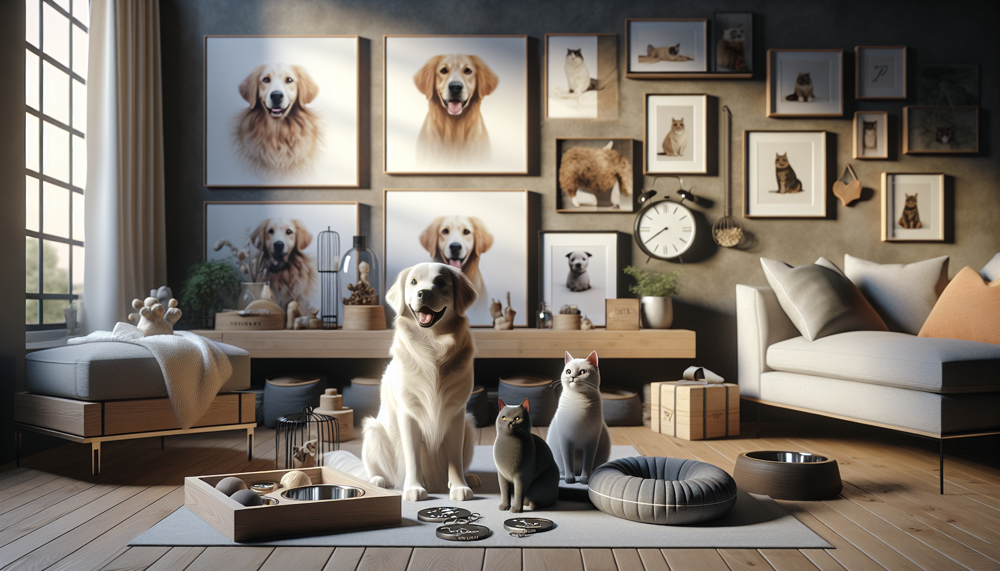

If you love discovering unique pet finds that feel a little more personal, stylish, and giftable than what you see in big-box stores, Etsy continues to be one of the best places to shop. This year, trending pet products on Etsy are all about combining function with personality. Pet owners want items that make everyday life easier, but they also want products that celebrate the special bond they share with their furry companions.
From personalized pet accessories to thoughtful gifts for dog lovers, Etsy is full of creative handmade and custom options that feel meaningful. Whether you are shopping for your own pup, looking for cat-friendly home accessories, or searching for the perfect present for a pet parent, knowing what is trending can help you find something truly memorable.
In this guide, we are diving into the most popular pet product trends on Etsy this year, why shoppers love them, and what to look for when choosing pieces that are both practical and adorable.
It is no surprise that personalized pet products remain one of the biggest Etsy trends this year. Pet owners love items that feel custom-made for their dog or cat, and personalization adds an extra layer of charm that makes everyday accessories more meaningful.
Popular personalized pet products on Etsy include custom collars, engraved tags, monogrammed bandanas, name-printed bowls, and personalized leash holders. These products are especially popular because they blend style and practicality. A custom name tag is cute, but it is also useful. A personalized bandana is a fun fashion statement, but it also makes pets stand out in photos, on walks, and during celebrations.
For gift shoppers, these items are easy winners. They feel thoughtful without being overly complicated, and they are perfect for birthdays, gotcha days, holidays, or new pet parent gifts.
One of the sweetest trends on Etsy this year is the rise of pet owner gifts designed to celebrate the relationship people have with their animals. Shoppers are not just buying for pets anymore. They are also buying for the humans who adore them.
Custom pet portraits, mugs with pet faces, memorial keepsakes, and personalized apparel are especially popular. These gifts work beautifully for dog moms, cat dads, and anyone who lights up at the chance to talk about their pet. Etsy shoppers are drawn to products that feel heartfelt, unique, and made with care.
Some trending gift ideas include watercolor pet portraits, custom sweatshirts with embroidered pet outlines, ornaments featuring pet names, and candles or decor inspired by specific breeds. These products do well because they combine emotional value with beautiful design.
If you are shopping for a pet lover, Etsy offers the kind of creative gift options that feel personal instead of generic. That is a big reason these products continue to trend year after year.
Pet owners today want products that fit their home aesthetic and personal style. This year on Etsy, functional pet essentials are getting a design upgrade. Instead of settling for plain, mass-produced gear, shoppers are choosing handmade or thoughtfully designed products that look great while serving a purpose.
Examples include minimalist pet bowls, neutral-toned feeding stations, chic toy baskets, personalized treat jars, and modern leash storage solutions. These pieces are especially appealing to pet parents who want their pet supplies to blend beautifully into their homes.
Etsy sellers are responding with products that feature clean lines, soft colors, natural materials, and custom details. It is a trend that makes a lot of sense. Pets are part of the family, so their things naturally become part of the home.
This trend is particularly strong among new pet owners and gift shoppers buying for housewarming parties, puppy adoptions, or newly renovated homes.
Another standout trend this year is the growing interest in handmade pet toys and enrichment products. More pet owners are looking for creative ways to keep their dogs and cats mentally stimulated, especially those who spend time indoors or need extra engagement throughout the day.
On Etsy, shoppers are finding handmade snuffle mats, puzzle toys, catnip toys, tug toys, and sensory play items made from quality materials. These products are popular because they feel more intentional than standard pet store toys. Many are crafted in smaller batches, designed with aesthetics in mind, and made for specific play styles or needs.
Pet parents are becoming more aware of enrichment and its role in reducing boredom and supporting healthy behavior. That awareness is helping drive demand for products that encourage sniffing, foraging, chewing, and interactive play.
Handmade enrichment products also make great gifts for active dogs, curious cats, and pet owners who enjoy trying new things with their animals. They are useful, fun, and often beautifully made.
Etsy has always been a favorite for seasonal shopping, and pet products are no exception. This year, shoppers are embracing holiday-themed pet accessories and decor more than ever. From festive bandanas and bow ties to custom ornaments and birthday party accessories, seasonal pet products are a major trend.
These items work so well on Etsy because they bring personality to holidays and special occasions. Pet owners love including their furry friends in celebrations, photo shoots, and family traditions. A personalized birthday bandana, a Christmas ornament with a pet name, or a spooky Halloween collar accessory can instantly make the moment feel more special.
Trending seasonal categories include:
These products are especially popular with gift shoppers who want timely, photo-ready items that feel festive and unique.
One of the more meaningful Etsy pet trends this year is the continued demand for memorial products and sentimental keepsakes. Pets are family, and many shoppers turn to Etsy for comforting, personalized items that honor beloved companions.
Popular memorial products include custom portrait prints, remembrance ornaments, engraved keepsake boxes, photo frames, and sympathy gifts for grieving pet owners. These items are often chosen because they offer a gentle, personal way to celebrate a pet's life and memory.
Even outside of loss, sentimental pet keepsakes are trending because people want to preserve memories in beautiful ways. Paw print art, personalized pet illustrations, and custom home decor featuring a pet's name or likeness all tap into this emotional connection.
For Etsy shoppers, these products stand out because they are often made with real care and empathy. That personal touch matters, especially for purchases that carry emotional significance.
With so many creative options available, it helps to shop with a few simple priorities in mind. First, think about whether the product is practical, sentimental, or both. The best Etsy finds often combine usefulness with personality. Second, pay close attention to product details, materials, sizing, and customization options. Since many Etsy items are handmade or made to order, reading descriptions carefully can make a big difference.
It is also smart to check reviews, customer photos, and seller response times. If you are buying a gift or ordering something personalized, planning ahead is especially important. Handmade items often take a little longer, but the result is usually worth it.
Finally, look for products that reflect the recipient's style. A playful dog owner may love a bold custom bandana, while someone with a minimalist home may prefer neutral pet decor or modern engraved accessories. Etsy shines when you choose something that feels specific and personal.
This year's trending pet products on Etsy prove that pet shopping is about more than just essentials. It is about celebrating pets as cherished family members and finding products that feel thoughtful, stylish, and full of personality. Whether you are drawn to personalized accessories, meaningful gifts, seasonal must-haves, or elevated everyday essentials, Etsy offers a creative world of possibilities for pet owners and gift shoppers alike.
The biggest trends all share one thing in common: they help people express love for their pets in ways that feel authentic and special. That is exactly why Etsy continues to be such a go-to destination for dog lovers, cat owners, and anyone searching for a memorable pet-related gift.
If you are ready to find something unique for your furry best friend or a fellow pet lover, shop personalized pet products at SnoutAndAbout on Etsy.